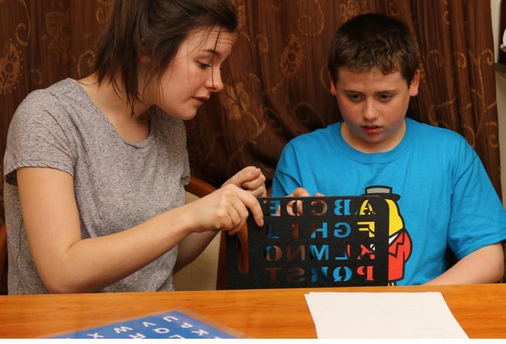
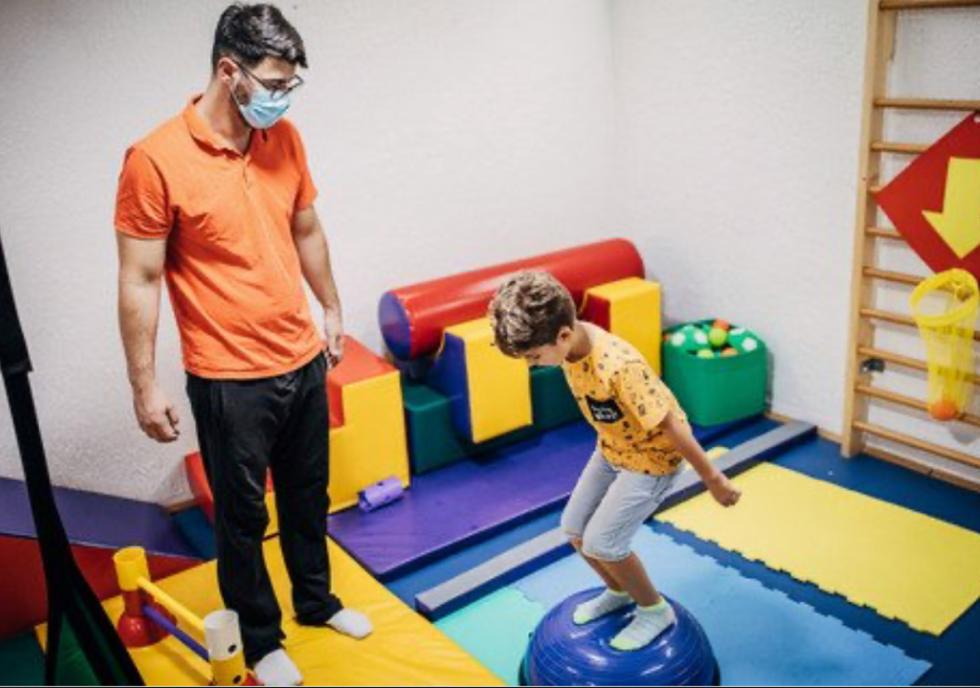

Rapid Prompting Method(RPM)
Rapid Prompting Method (RPM) is a technique that involves a person with a disability pointing to letters from multiple choice options with the aid of sensory “prompts” which are intended to maintain attention on the task and extinguish sensory-motor preoccupations (Chen, Yoder, Ganzel, Goodwin, & Belmonte, 2012).
Special Education
By evaluating the developmental differences and deficiencies of the student, the individual education program prepared by the Special Education Specialist is applied as individual trainings by Special Education Teachers during the day. The studies are supported by the Life Leader and generalized
Life Leadership Training
All individuals with special needs, especially those with autism, are supported to cover all areas of development, and in this program, it is aimed for each student; independent life, acquiring a school and a profession, having Social-Communicative adaptation skills and gaining them to the society. Topics of Study; Basic Sports Skills, Coordination Skills, Independent Living Skills, Self-Care Skills, Social Communication Studies, School Support and Inclusion Studies, Vocational Orientation Studies, Cycling Skills, Ping pong, Swimming Skills, Special Education Support Skills, Family Education, Gymnastics, Body Awareness etc.
Sports Training & Movement Training
Sports training is a training program planned with session training as an alternative to full-day life leadership training. In these trainings, it is aimed to improve the social and developmental skills of the individual with physical education, sports and game activities, as well as to be more successful in peer interaction, increase communication and improve self-confidence. In addition, with the introduction of meaningful skills into his life, there is a decrease in problem behaviors, stereotypical movements and routines. Topics studied; Basic Sports skill, Coordination, The game, Ping pong, Bike, Ice skating, Football, Basketball, Volleyball, Gymnastics, Tennis, Ski etc.
Sensory Integration
All individuals with special needs, especially those with autism, are supported to cover all areas of development, and in this program, it is aimed for each student; independent life, acquiring a school and a profession, having Social-Communicative adaptation skills and gaining them to the society. Topics studied; Basic Sports Skills, Coordination Skills, Independent Living Skills, Self-Care Skills, Social Communication Studies, School Support and Inclusion Studies, Vocational Orientation Studies, Cycling Skills, Ping pong, Swimming Skills, Special Education Support Skills, Family Education, Gymnastics, Body Awareness etc.
Working Titles

Self-Care Skills: Individuals diagnosed with autism generally cannot become self-sufficient in the field of self-care, and this makes them dependent on others for a lifetime. It is aimed that the student can continue his life as a self-sufficient individual with the self-care skills studies we will do. Life Skills: Life skills studies will also make the student independent in parallel with their self-care skills, and beyond that, will help them communicate, develop the feelings of cooperation and cooperation and make them compatible with common life. Social Communication Studies: Autism is a social communication problem. The social rules and communication processes that we improvise are a lesson that should be taught to individuals with autism. In this context, all communication ways necessary in social life will be tried to be taught in order. Basic Sports Skills: There are some basic skills that human beings have at the most fundamental level. These skills, such as walking, running, throwing, holding, jumping, leaping, develop through play, activities, and social processes in their natural growth stages. Since individuals with autism are often deprived of these processes, they have problems with these simplest skills. However, these skills are a prerequisite for many complex skills in life. Coordination Studies: Coordination is the ability to do more than one skill in a certain order and timing. It includes many cognitive processes such as thinking, keeping in mind, estimating, timing and reasoning. It also supports the ability to act without command. Bicycle: Bicycle is an enjoyable vehicle that adorns every child's dreams. Unfortunately, most of our children cannot ride bikes at all, they grow up without the necessary environment and self-confidence. Almost all of Anka's students ride bicycles. Cycling is a joy of life for a child, as it provides benefits in attention, concentration, awareness of body and space, coordination and reasoning. Table Tennis: Table tennis is an important study topic that we definitely work with each of our students. It has positive contributions in many areas such as attention, eye tracking and eye contact, hand eye coordination, space and body awareness, reasoning, and perception processes. Fitness Workout: Fitness work , which is an important work to improve general body coordination and body awareness, is also an important precaution against spinal problems that may occur in later ages. Protecting from such problems, which is important for each individual, is more important for individuals with different development. Swimming Practice: First of all, swimming is an activity that almost all of our students love. Most of the time, our students are more open to communication and therefore learning while doing the activities they love. Thanks to swimming, in addition to many physical benefits, there is a positive effect on language development with learning breath control. In addition, there are scientific studies that show that swimming exercises reduce problem behaviors. Special Education Support Activities: The goals of the student's special education skills are supported and implemented by teamwork with a special education specialist. Socialization Studies: In this topic, which is closely related to social communication studies, on the one hand, social communication is studied, on the other hand, it is aimed to keep the student in the society, to perceive, learn and obey the social rules. Going out with the student life leader, going out to places such as shopping malls, cinemas, theaters, special shows for children is provided to see all the social expectations in these places.